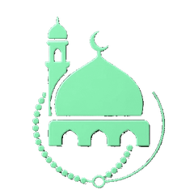
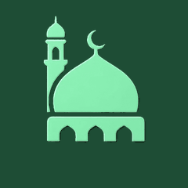

Manevi HalkaShared khatm, Jawshan and dhikr circles
Prayer times and the verse of the day
What is the Manevi Halka app
Share the juz with your circle, read in turns, complete the khatm together. Prayer times, qibla and a dhikr counter are in the same app.
Swipe to explore the app
What's inside
Worship itself is always free
Qur'an Khatm
Share the juz among your circle, read in turns, complete the khatm together. Works solo or with thirty people.
Jawshan al-Kabir
101 chapters, shared or personal. One chapter a day, tracked progress, completion certificate.
Dhikr and Tasbih
Asma ul-Husna, salawat, digital tasbih. Build your own dhikr lists, reorder them and share them.
Prayer Times
Home screen widget, live countdown, and your city updates by itself when you travel. 106 countries.
Qibla and Daily Tracking
Qibla finder, prayer and nafl tracking, memorization practice, awrad and religious days.
Book Reading Circles
Shared reading rounds, a personal library, your last page, daily and weekly progress.
Start your circle today
With your family, your friends, or on your own. Worship lasts longer together.
Unity of heart surpasses unity of language.